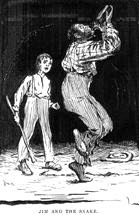

| "...I've always reckoned that looking at the new moon over your left shoulder is one of the carelessest and foolishest things a body can do." |
Below is a list of prohibitions and controls on behavior. In Folk Beliefs of the Southern Negro, Newbell Niles Puckett divides these restrictions into positive and negative "control-signs". Both involve causal relationships; positive control-signs bring about a desired results through the commission of an act, negative control-signs allow an individual to avoid a undesirable result by avoiding a specific action. Both types are included here under 'thematic' headings.
*Those selections marked with an asterisk are quoted directly from Folk-Lore From Adams County Illinois by Harry Middleton Hyatt.
BEES
SNAKES
 Cures for snake bite:
The Explanatory Notes to this edition of The Adventures of Huckleberry Finn include the following prescription for snakebite, quoted from the 1867 Gunn's New Family Physician:
SPIDERS
| ...signs is signs... |
That certain occurrences are signs of things to come is accepted as absolute truth by Jim. He does not doubt the connection between his hair and his newfound wealth; to his mind they are in fact inextricably entwined.
A prophetic sign or omen differs from a control-sign in that the "action is accidental or outside of personal control." 1 The course of events is set into motion by chance or by another person rather than by any action of the individual who will suffer the consequences. Puckett notes that the distinction is not clear cut; often there are ways to counteract an omen. For example an owl hooting signifies a coming death. The owl may be hushed by sticking a knife in wood, or by turning your pockets inside out.2 Each item below is connected to Huck Finn; together they illustrate the fact that for Huck and Jim, almost no occurrence, however common, is without significance.
DOGS
HAIR
DROWNING
It was believed that when a person died, if his or her soul was somehow troubled - if it had been wronged in life or in its death, for example, or if the body were left unburied - it would roam a middle ground between the states of existence.
In Mark Twain's America Bernard DeVoto describes ghosts or "ha'nts"
as follows:
"The spirit left the corpse and entered a dreary state, less than life, not quite extinction.
Such half-creatures flitted endlessly about the world, their passage marked by a small rustling or
a tiny beat of wings. ... But for their envy, they would have had pathos."
(DeVoto,68)
The witch can be a man but is more frequently a woman. She is normally an old hag but can change form, becoming any living creature - a frog, an insect, a black cat. Her purpose is not so much murder as torment; she brings about poor health, misfortune, and mischief. One means to this end is riding. When she wishes to ride someone, a witch enters the house of her sleeping victim, slips a bit into his mouth and the nightmare begins. You know you've been ridden when you wake up fatigued and depressed, often with bit marks at the corner of the mouth and lashes on the back from her whip.
Because the witch plaits the victim's hair into stirrups, one way to prevent a riding is to tie your hair with thread. As she must shed her skin before riding, sharp objects left in her path will thwart her by catching on her empty skin, preventing her from re-entering it. There is a close connection between witches and horses; therefore hanging horseshoes over windows and doors and throughout the house keeps away the unwelcome visitor. Some believe that the witch is forced to travel all the roads that the horseshoe had traveled before she could enter the house. Daylight and safety will arrive before she's finished the route.
Witches also have a counting instinct which forces them to count all that they see. So a witch-riding can be avoided by leaving items in her path - a sieve, she will be forced to count all the holes; a broom, she will count all the straws. Some people scatter mustard seeds or sand throughout the house. The witch is caught before she has time to count each grain.
GHOSTS
"Then away out in the woods I heard that kind of a sound that a ghost makes when it wants to tell about something that's on its mind and can't make itself understood, and so can't rest easy in its grave and has to go about that way every night grieving."
- Huck Finn
WITCHES
"O, it's de dad-blame' witches..."
CONJURE-BALLS
"Miss Wat's nigger, Jim, had a hair-ball as big as your fist, which had been took out of the fourth stomach of an ox, and he used to do magic with it. He said there was a spirit inside of it, and it knowed everything."
- Huck Finn
According to Puckett, conjure-balls are generally used as charms to cast spells. Left in the room, hand, or path of someone, it will produce the desired effect. "In some of the states a spell may be put upon a man by burying a "hair-ball" (one of the compact balls of hair often found by butchers in the stomachs of cows or oxen) under his doorstep. This object (powerful, because peculiar) may also be carried about as an amulet to protect one from spells." 4
2.
Puckett, 482.
return to
text
3. Hoffman, 52. - "Jims Magic: Black or White?"
return to text
4. Puckett, 231.
return to text